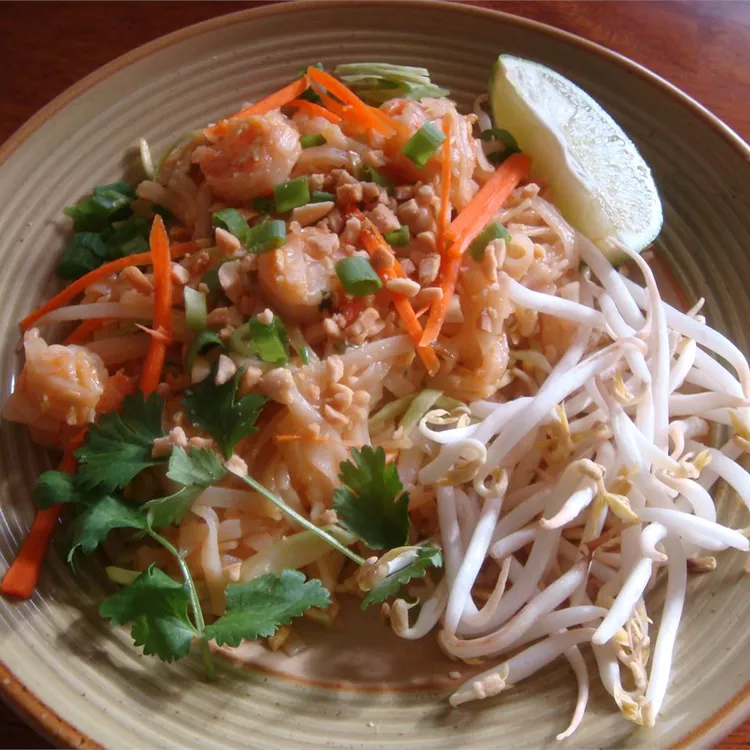

Sukhothai Pad Thai
This Sukhothai pad thai can be made with shrimp, chicken, or pork instead
of tofu. You can also look for items in the Asian foods section at your
local grocery store. Adjust the pad thai sauce ingredients to taste.
Recipe by Christine L | Updated on January 19, 2023

Prep Time: 20 mins
Cook Time: 10 mins
Total Time: 30 mins
Ingredients
- ½ cup white sugar
- ½ cup distilled white vinegar
- ¼ cup soy sauce
- 2 tablespoons tamarind pulp
- 1 (12 ounce) package dried rice noodles
- ½ cup vegetable oil
- 1½ teaspoons minced garlic
- 4 eggs
- 1 (12 ounce) package firm tofu, cut into ½ inch strips
- 1½ tablespoons white sugar
- 1½ teaspoons salt
- 1½ cups ground peanuts
- 1½ teaspoons ground, dried oriental radish
- ½ cup chopped fresh chives
- 1 tablespoon paprika
- 2 cups fresh bean sprouts
- 1 lime, cut into wedges
Directions
-
To prepare pad thai sauce: In a medium saucepan over medium heat, blend
sugar, vinegar, soy sauce, and tamarind pulp.
-
To make pad thai: Soak rice noodles in cold water until soft; drain. In
a large skillet or wok over medium heat, warm oil and add garlic and
eggs; scramble eggs. Add tofu and stir until well mixed; add noodles and
stir until cooked.
-
Stir in pad thai sauce, 1½ tablespoons sugar, and 1½ teaspoons salt.
Stir in peanuts and ground radish. Remove from heat and add chives and
paprika.
- Serve with lime and bean sprouts on the side.